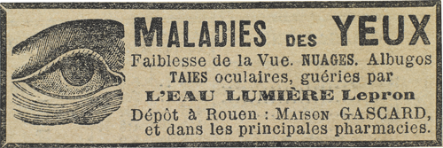

Dans le grand silence, Godefroy d’Étigues énonça l’acte d’accusation, ou plutôt les trois actes de la formidable accusation. Il le fit sèchement, comme il l’avait fait jusque-là, sans détails inutiles, sans éclats de voix, plutôt comme on lit un procès-verbal.
« Il y a dix-huit mois, Denis Saint-Hébert, le plus jeune d’entre nous, chassait sur ses terres aux environs du Havre. En fin d’après-midi, il quitta son fermier et son garde, jeta son fusil sur l’épaule et s’en alla, dit-il, voir du haut de la falaise le soleil se coucher dans la mer. Il ne reparut pas de la nuit. Le lendemain, on trouva son cadavre sur les rochers que la mer découvrait.
« Suicide ? Denis Saint-Hébert était riche, bien portant, d’humeur heureuse. Pourquoi se serait-il tué ? Crime ? On n’y songea même pas. Donc, accident.
« Au mois de juin qui suivit, autre deuil pour nous, dans des conditions analogues. Georges d’Isneauval qui chassait les mouettes de très grand matin, au pied des falaises de Dieppe, glissa sur les algues d’une façon si malencontreuse que sa tête frappa contre un rocher et qu’il tomba inanimé. Quelques heures plus tard, deux pêcheurs l’aperçurent. Il était mort. Il laissait une veuve et deux petites filles.
« Là encore accident, n’est-ce pas ? Oui, accident pour la veuve, pour les deux orphelines, pour la famille… Mais pour nous ? Était-il possible qu’une deuxième fois le hasard se fût attaqué au petit groupe que nous formions ? Douze amis s’associent pour découvrir un grand secret et atteindre un but d’une portée considérable. Deux d’entre eux sont frappés. Ne doit-on pas supposer une machination criminelle qui, en s’attaquant à eux, s’attaque en même temps à leurs entreprises ?
« C’est le prince d’Arcole qui nous ouvrit les yeux et nous engagea dans la bonne voie. Le prince d’Arcole savait, lui, que nous n’étions pas seuls à connaître l’existence de ce grand secret. Il savait que, au cours d’une séance chez l’impératrice Eugénie, on avait évoqué une liste de quatre énigmes transmise par Cagliostro à ses descendants, et que l’une d’elles s’appelait précisément, comme celle qui nous intéresse, l’énigme du chandelier à sept branches. En conséquence, ne fallait-il pas chercher parmi ceux à qui la légende avait pu être transmise ?
« Grâce aux puissants moyens d’investigation dont nous disposons, en quinze jours, notre enquête aboutissait. Dans un hôtel particulier d’une rue solitaire de Paris, habitait une dame Pellegrini, qui vivait assez retirée, et disparaissait souvent des mois entiers. D’une grande beauté, mais fort discrète d’allures, et comme désireuse de passer inaperçue, elle fréquentait, sous le nom de comtesse de Cagliostro, certains milieux où l’on s’occupait de magie, d’occultisme et de messe noire.
« On put se procurer sa photographie, celle-ci, et l’envoyer au prince d’Arcole qui voyageait alors en Espagne ; il reconnut avec stupeur la femme même qu’il avait vue jadis.
« On s’enquit de ses déplacements. Le jour de la mort de Saint-Hébert, aux environs du Havre, elle était de passage au Havre. De passage à Dieppe, lorsque Georges d’Isneauval agonisait au pied des falaises de Dieppe !
« J’interrogeai les familles. La veuve de Georges d’Isneauval me confia que son mari, en ces derniers temps, avait eu une liaison avec une femme qui, suivant elle, l’avait fait infiniment souffrir. D’autre part, une confession manuscrite de Saint-Hébert, trouvée dans ses papiers, et gardée jusqu’ici par sa mère, nous révéla que notre ami, ayant eu l’imprudence de noter nos douze noms et quelques indications concernant le chandelier à sept branches, le carnet lui avait été dérobé par une femme.
« Dès lors, tout s’expliquait. Maîtresse d’une partie de nos secrets, et désireuse d’en connaître davantage, la même femme, qu’avait aimée Saint-Hébert, s’était fait aimer de Georges d’Isneauval. Puis, ayant reçu leurs confidences, et dans la crainte d’être dénoncée par eux à leurs amis, elle les avait tués. Cette femme est ici, devant nous. »
Godefroy d’Étigues fit une nouvelle pause. Le silence redevint accablant, si lourd que les juges semblaient immobilisés dans cette atmosphère pesante et chargée d’angoisse. Seule, la comtesse de Cagliostro gardait un air distrait, comme si aucune parole ne l’eût atteinte.
Toujours étendu dans son poste, Raoul d’Andrésy admirait la beauté charmante et voluptueuse de la jeune femme, et, en même temps, il éprouvait un malaise à voir tant de preuves s’amasser contre elle. L’acte d’accusation la serrait de plus en plus près. De toutes parts, les faits venaient à l’assaut, et Raoul ne doutait point qu’une attaque plus directe encore ne la menaçât.
– Dois-je vous parler du troisième crime ? demanda le baron.
Elle répliqua d’un ton de lassitude :
– Si cela vous plaît. Tout ce que vous me dites est inintelligible. Vous me parlez de personnes dont j’ignorais même le nom. Alors, n’est-ce pas, un crime de plus ou de moins…
– Vous ne connaissiez pas Saint-Hébert et d’Isneauval ?
Elle haussa les épaules sans répondre.
Godefroy d’Étigues se pencha, puis d’une voix plus basse :
– Et Beaumagnan ?
Elle leva sur le baron Godefroy des yeux ingénus :
– Beaumagnan ?
– Oui, le troisième de nos amis que vous avez tué ? Il n’y a pas bien longtemps, lui… quelques semaines… Il est mort empoisonné… Vous ne l’avez pas connu ?
Que signifiait cette accusation ? Raoul regarda Beaumagnan. Il s’était levé, sans redresser sa haute taille, et, de proche en proche, s’abritant derrière ses amis, il venait s’asseoir à côté même de Joséphine Balsamo. Celle-ci tournée vers le baron n’y fit pas attention.
Alors Raoul comprit pourquoi Beaumagnan s’était dissimulé et quel piège redoutable on tendait à la jeune femme. Si réellement elle avait voulu empoisonner Beaumagnan, si réellement elle le croyait mort, de quelle épouvante allait-elle tressaillir en face de Beaumagnan lui-même, vivant et prêt à l’accuser ! Si, au contraire, elle ne tremblait point et que cet homme lui parut aussi étranger que les autres, quelle preuve en sa faveur !
Raoul se sentit anxieux, et il désirait tellement qu’elle réussît à déjouer le complot qu’il cherchait les moyens de l’en avertir. Mais le baron d’Étigues ne lâchait pas sa proie, et déjà reprenait :
– Vous ne vous souvenez pas de ce crime-là, non plus, n’est-ce pas ?
Elle fronça les sourcils, marquant pour la seconde fois un peu d’impatience, et se tut.
– Peut-être même n’avez-vous pas connu Beaumagnan ? demanda le baron, incliné sur elle comme un juge d’instruction qui épie la phrase maladroite. Parlez donc ! Vous ne l’avez pas connu ?
Elle ne répondit pas. Précisément, à cause de cette insistance opiniâtre, elle devait se défier, car son sourire se mêlait d’une certaine inquiétude. Comme une bête traquée, elle flairait l’embûche et fouillait les ténèbres de son regard.
Elle observa Godefroy d’Étigues, puis se tourna du côté de la Vaupalière et de Bennetot, puis de l’autre côté, qui était celui où se tenait Beaumagnan…
Tout de suite, elle eut un geste éperdu, le haut-le-corps de quelqu’un qui aperçoit un fantôme, et ses yeux se fermèrent. Elle tendit les mains pour repousser la terrible vision qui la heurtait et on l’entendit balbutier :
– Beaumagnan… Beaumagnan…
Était-ce l’aveu ? Allait-elle défaillir et confesser ses crimes ? Beaumagnan attendait. De toutes ses forces pour ainsi dire visibles, de ses poings crispés, des veines gonflées de son front, de son âpre visage convulsé par un effort surhumain de volonté, il exigeait la crise de faiblesse où toute résistance se désagrège.
Un moment il crut réussir. La jeune femme fléchissait et s’abandonnait au dominateur. Une joie cruelle le transfigura. Vain espoir ! Échappant au vertige, elle se redressa. Chaque seconde écoulée lui rendit un peu de sérénité et délivra son sourire, et elle prononça, avec cette logique qui semble l’expression même d’une vérité que l’on ne peut contredire :
– Vous m’avez fait peur, Beaumagnan, car j’avais lu dans les journaux la nouvelle de votre mort. Mais pourquoi vos amis ont-ils voulu me tromper ?
Raoul se rendit compte aussitôt que tout ce qui s’était passé jusque-là n’avait point d’importance. Les deux vrais adversaires se trouvaient l’un en face de l’autre. Si bref qu’il dût être, étant donnés les armes de Beaumagnan et l’isolement de la jeune femme, le combat réel ne faisait que commencer.
Et ce ne fut plus l’attaque sournoise et contenue du baron Godefroy, mais l’agression désordonnée d’un ennemi qu’exaspéraient la colère et la haine.
– Mensonge ! mensonge ! s’écria-t-il, tout est mensonge en vous. Vous êtes l’hypocrisie, la bassesse, la trahison, le vice ! Tout ce qu’il y a d’ignoble et de répugnant dans le monde se cache derrière votre sourire. Ah ! ce sourire ! Quel masque abominable ! On voudrait vous l’arracher avec des tenailles rougies au feu.